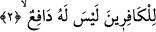
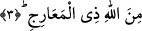
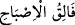

Âyette yer alan “bâ” harf-i cerri, “seele” fiilinin birlikte kullanılmış olduğu “an” harf-
i cerri anlamınadır. Bunun Kur’ân-ı Kerim’de benzeri de vardır. Nitekim Allah şöyle
buyurur: “Bunu bir bilene sor!” (el-Furkan, 25/59). Bu âyet-i kerîmede de “bâ” harf-i
cerri, “an” harf-i cerri yerine kullanılmıştır. Çünkü âmil olan bu harflerin bir kısmının
diğeri yerine kullanılması, âlimlerin ittifakla kabul ettikleri hususlardandır.
İmam Vâhidî’nin ifâdesine göre âyette yer alan “ba” harf-i cerri mânâyı pekiştirmek
için te’kid olsun diye getirilmiştir. Nitekim Kur’ân-ı Kerîm’de böyle bir uygulamanın
benzeri vardır. Cenâb-ı Hak şöyle buyurur: “Hurma dalını kendine doğru silkele ki
üzerine taze, olgun hurma dökülsün.” (Meryem, 19/25). Bu açıklamaya göre âyet-i
kerîmenin mânâsı; “isteyen biri inen azâbı istedi” şeklinde olur.
2. (O) inkârcılar içindir. Onu savacak hiç kimse yoktur.
Yâni inkârcı kâfirlerin üzerine inecek azaptır. Burada “kâfirîn” kelimesinin başındaki
“lâm” harf-i cerri “alâ” anlamınadır. Nitekim bunun da Kur’ân-ı Kerîm’de benzeri
vardır. Allah şöyle buyurur: “Eğer kötülük ederseniz yine kendinize etmiş
olursunuz.” (el-İsra, 17/7). Buna göre “kendinize” ifâdesi kendi aleyhinize anlamına
olur. Ya da “bihim” anlamınadır. Buna göre âyetteki lam “ba” anlamına olur. “Hâlbuki
onlara ancak, dini yalnız O’na has kılarak ve hanifler olarak Allah’a kulluk
etmeleri emrolunmuştu.” (el-Beyyine, 98/5) âyet-i kerîmesindeki “li-ya’budû”
ifâdesini “bi-en ya’budû” şeklinde anlamak gerekir.
Veya “lam” harf-i cerri kendi mânâsına kullanılmıştır. Yâni “o söz konusu azap
onların başına inkârları sebebiyle indi” demek olur. Her üç takdirde de harf-i cerrin
müteallakı (bağlı olduğu kelime) “vâkıun” kelimesidir.
Âriflerden birisi der ki: Bu, çirkin amelleriyle baş başa bırakılacaklarını ve asla
azâba uğramayacaklarını zanneden emel ve yalancı zan sâhiplerinin vasfıdır.
3. (O), yükselme derecelerinin sâhibi olan Allah katındandır.
O azâbın vakti geldiği ve hikmet-i ilâhî, vuku bulmasını gerektirdiğinde
gerçekleşiverir.
“Dereceler sâhibi” şeklinde tercüme edilen “Zi’l-Meâric” ifâdesi, Allah Teâlâ’nın
sıfatıdır. Çünkü bu ifâde, “
/Sabahı açan”, “
/Geceyi dinlenme
vakti kılan” ve benzerlerinde olduğu gibi Cenâb-ı Hakk’ın izâfet terkibi şeklindeki